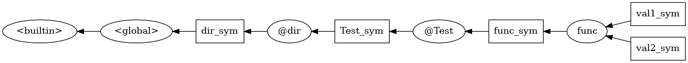

Y.3 LuneScript Development (Scopes and Symbols)
Continuation of LuneScript development.
Since the overview of each process in the flow has already been explained, this time we will go into a little internal explanation.
scope
LuneScript is a common lexical scope.
Also, there are the following types of scopes:
- built-in scope
- global scope
- In-module scope
The built-in scope manages built-in type symbols such as int and str , and built-in function symbols such as print() and string.format() .
The global scope manages lua 's global symbol compatible symbols.
Basically, all symbols of modules created by the user are managed within the module scope.
Scope structure
The scope has a tree structure, and each scope holds the following elements.
- parent scope
- list of symbols belonging to scope
For example, in Test.lns below,
// @lnsFront: skip
// Test.lns
fn func( val1:int ) {
let val2 = val1 + 10;
}
func( 1 );A scope consists of two things:
@Testscopefuncscope
@Test scope is the scope that manages the module of Test.lns. A .lns file always has its own scope.
Note that LuneScript modules manage modules with relative paths from the current directory.
A module with relative path dir/Test.lns has @Test scope inside @dir scope.
Classes in LuneScript
The scope is managed by the Ast.Scope class.
symbol
A scope manages the symbols belonging to that scope.
For example, for the following sources:
// @lnsFront: skip
// Test.lns
fn func( val1:int ) {
let val2 = val1 + 10;
}
func( 1 );
User-defined func function symbols are registered in this @Test.
The val1 and val2 variable symbols are registered in the func scope.
The scope and symbols at this time become the following tree.
digraph G {
rankdir=RL;
builtin[label="<builtin>"];
global[label="<global>"];
dir[label="@dir"];
dir_sym[shape="box"];
Test[label="@Test"];
Test_sym[shape="box"];
func_sym[shape="box"];
func;
val1_sym[shape="box"];
val2_sym[shape="box"];
global->builtin
dir_sym->global
dir->dir_sym
Test_sym->dir
Test->Test_sym
func->func_sym
func_sym->Test
val1_sym->func
val2_sym->func
}
Here, the ellipse is the scope and the square is the symbol.
Composition of symbols
A symbol consists of the following attributes:
- access restrictions
- name
- type
- mutable/immutable
For example, for the code below:
// @lnsFront: skip
// Test.lns
fn func( val1:int ) {
let val2 = val1 + 10;
}
func( 1 );Each symbol is:
| access restrictions | name | type | mut/imut | |
|---|---|---|---|---|
| local | func | fn (int) | imut | |
| local | val1 | int | imut | |
| local | val2 | int | imut |
Classes in LuneScript
The scope is managed by the Ast.SymbolInfo class.